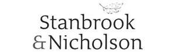

Trade Mark Journal No.2025/017 25 April 2025
UK00004183567 3 April 2025 (6,16,19,37,40)

- Class 6
- Metallic windows and doors; Metallic windows; Doors and windows of metal; Metallic doors; Windows of metal; Metal windows; Hinges for doors and windows (Metal -); Doors, gates, windows and window coverings of metal; Metal casement windows; Roof fanlights [windows] of metal; Roof windows of metal; Roof lights [windows] of metal; Aluminium windows; Metal doors; Frames of metal for doors; Doors of metal for buildings; Metal window casements; Window casements of metal; Door panels of metal; Metal joinery fittings.
- Class 16
- Paper, cardboard and goods made from these materials, not included in other classes; printed matter; bookbinding material; photographs; stationery; artists' materials; paint brushes; typewriters and office requisites (except furniture); printers' type; printing blocks.
- Class 19
- Timber windows and doors; roof fanlights of non-metallic materials; roof windows (non-metallic); staircases (non-metallic); porches (non-metallic); car ports (non-metallic); garage doors (non-metallic); door frames (non-metallic); building frames (non-metallic); orangeries (non-metallic); storm-proof windows (non-metallic); Shutters (Non-metallic -) for windows; Doors, gates, windows and window coverings, not of metal; Non-metallic windows; Frames (Non-metallic -) for glazed windows; Roof windows (Non-metallic -); Roof fanlights [windows] of non-metallic materials; Joinery products of timber for use in buildings; Timber mouldings; Wood panelling; Building and construction materials and elements made of wood and artificial wood ; Construction timber.
- Class 37
- Joinery; paint spraying; construction of kitchens; renovation of kitchens; services relating to the fitting of kitchens; construction of staircases from wood; joinery (repair); property development services; Installation of doors and windows; Joinery [repair]; Joinery services [repair of woodwork]; Construction of kitchens; Renovation of kitchens; Construction of staircases of wood; Construction of walls; Maintenance of wood flooring.
- Class 40
- Joinery (custom manufacture); Joinery services [custom manufacturing of woodwork]; Joinery [custom manufacture].
STANBROOK & NICHOLSON (COMMERCIAL) LIMITED
Representative: Sprintlaw (UK) Ltd.